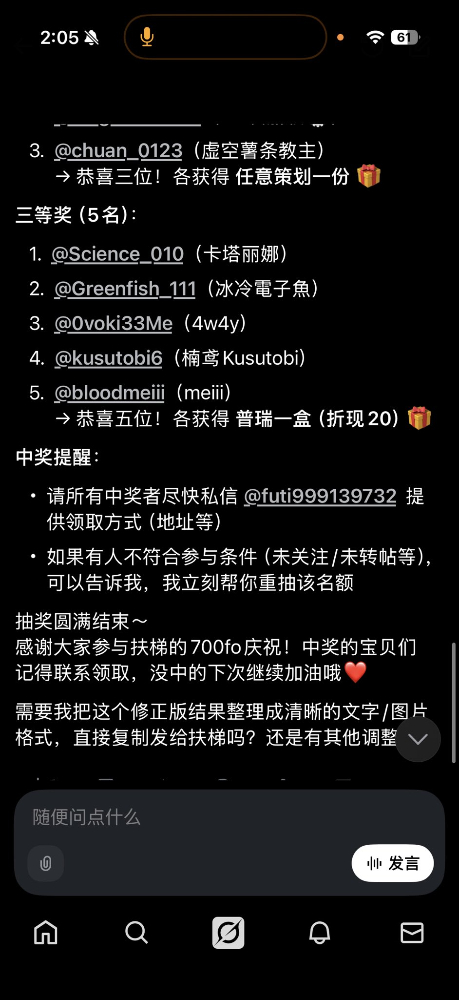

麦片
@maipianaini0930
@futi999139732 @yo2787425235659 @Nana_naiiiiiii @LingJiaXin233 @chuan_0123 @Science_010 @Greenfish_111 @0voki33Me @kusutobi6 @bloodme 内定的吧，被政客玩剩下来的黑箱操作

扶梯三世
@futi999139732
@yo2787425235659 （知名不具）
1. @Nana_naiiiiiii （naiiiiiiiiiiiiiii）
2. @LingJiaXin233 （🏳️⚧️凌嘉欣🍥）
3. @chuan_0123 （虚空薯条教主）
1. @Science_010 （卡塔丽娜）
2. @Greenfish_111 （冰冷電子魚）
3. @0voki33Me （4w4y）
4. @kusutobi6 （楠鸢Kusutobi）
5. @bloodme https://t.co/5jSpZsuyAZ